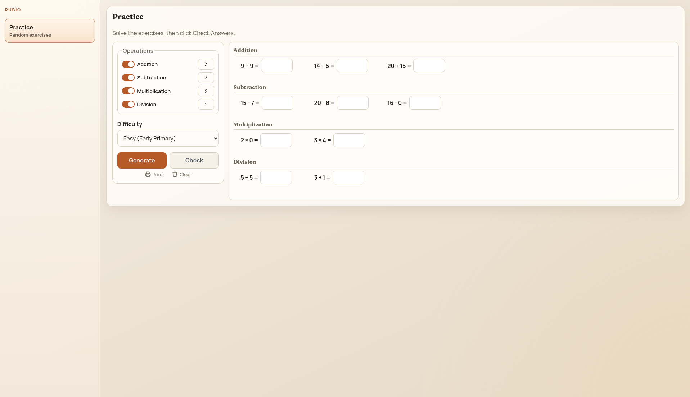
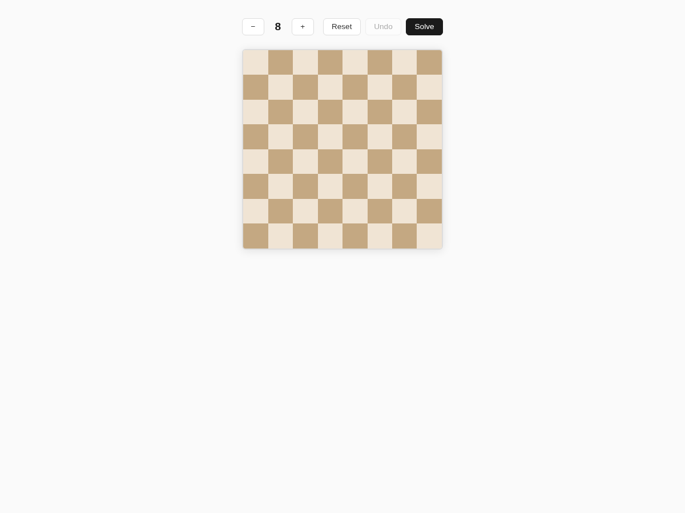
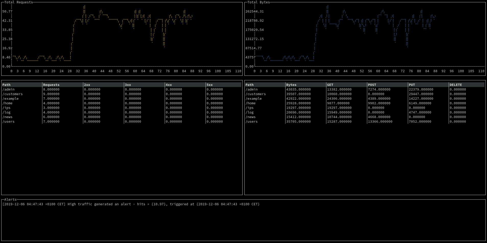

Juan Cañete
Senior Software Engineer. Curious, persistent, pragmatic. I love learning and building things.
Senior Software Engineer. Curious, persistent, pragmatic. I love learning and building things.
I'm a software engineer based in Madrid with 20 years of experience in software development and systems architecture. Currently at Netdata, where I work on backend systems for infrastructure monitoring and build multi-agent AI systems for data analysis.
Previously I worked on observability at BBVA, billing and payments at OVHcloud, and spent a few years trying to build my own company, Komlog — a SaaS platform for system monitoring that extracted metrics from unstructured data.
Telecom engineer by training, with a Master in AI and Deep Learning. Full CV on LinkedIn.
Featured Projects

Math practice worksheets for primary school kids. Generate, solve, and print exercises.
React · Vite

Interactive puzzle solver for the classic N-Queens problem. Place queens on the board or let it solve for you.
Vue · Buefy

Terminal application to monitor logs in real time with traffic charts, stats, and alerts.
Go